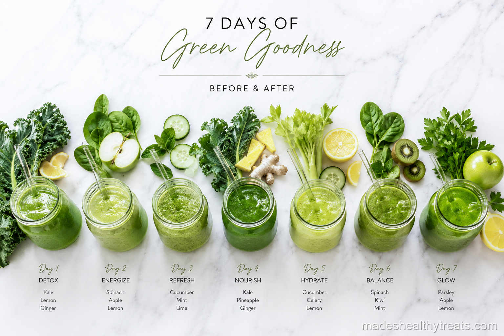

Why I Started My Smoothie a Day Weight Loss Experiment
My smoothie a day weight loss experiment started because I was tired of feeling sluggish, not because I wanted to punish my body into a smaller size. I had been waking up already behind, grabbing whatever was fastest, and wondering why my energy felt shaky by midmorning. I wanted one simple change that did not require counting everything, buying strange powders, or overhauling my whole life. So I decided that for 30 days, breakfast would be one green smoothie, made at home, poured into a mason jar, and enjoyed before the day could get bossy.
The First Week Felt Like My Body Was Unclenching
During the first week, the biggest change was bloating. I did not wake up magically lighter, but my stomach felt less tight and my mornings felt calmer because breakfast was already decided. The smoothie gave me fiber, water, greens, and just enough natural sweetness to keep me from hunting for pastries by ten. I also noticed that making the same thing every morning removed a surprising amount of mental noise.
By Week Two My Skin Started Telling On Me
In week two, my face looked brighter in the mirror, which sounds dramatic until you have spent months looking tired under every bathroom light. A coworker asked if I had changed my skincare, and I laughed because the only thing I had changed was spinach before email. I was still eating normal lunches and dinners, but starting the morning with greens made me want fresher choices later without forcing it.
Week Three Was When The Sugar Cravings Got Quiet
By week three, the biggest surprise was my 3pm chocolate habit. I still wanted something sweet sometimes, because I am human and chocolate is wonderful, but the frantic craving softened. I think the steady breakfast helped my blood sugar feel less chaotic, and the frozen banana made the smoothie feel like a treat instead of a chore.

I have learned that the best wellness habits are the ones that still feel kind on a normal Tuesday morning.
What Happened By Day Thirty
By week four, I had lost 6 pounds without changing anything else on purpose. My skin was clearer, my afternoon crash was less dramatic, and I felt proud in a way that had nothing to do with the scale. The exact smoothie I drank was one big handful of spinach, one frozen banana, half a cucumber, the juice of half a lemon, a small piece of ginger, one tablespoon of chia seeds, and one cup of cold coconut water blended until silky.
My Honest Ending
Would I do the smoothie a day weight loss experiment again? Absolutely, but I would start with 7 days if I were brand new. Thirty days taught me that consistency does not have to be loud to be powerful. One green smoothie every morning became a small promise I could keep, and that promise changed more than my breakfast.
The Part Nobody Sees In A Before And After
The part nobody sees in a before and after is how ordinary the change feels while it is happening. Most mornings were not cinematic. I was not glowing in linen beside a perfect window with a spotless counter. I was usually half awake, rinsing spinach, looking for the blender lid, and reminding myself that the small promise mattered even when I did not feel inspired. That is what made the experiment work for me. It was not dramatic enough to rebel against. It fit inside my life quietly, and because it fit quietly, I kept doing it.
How I Would Make It Easier Next Time
If I did the 30 days again, I would prep freezer bags with spinach, banana, cucumber, and ginger so the morning version took even less thought. I would also take a quick note each day about energy, cravings, digestion, and mood, because those changes were more interesting than the number on the scale. Weight loss was one result, but the bigger gift was feeling like my mornings belonged to me again. That feeling is hard to measure, but I noticed it every time I chose the blender before the rush.
You Might Also Like

What Happens to Your Body When You Drink Green Smoothies Every Day
I explain the simple body changes I noticed and the science that makes daily green smoothies make sense.
Read more →
The 7 Biggest Smoothie Mistakes That Are Ruining Your Results
I made these smoothie mistakes myself before I learned how to blend for energy, fullness, and real results.
Read more →
Do Juice Cleanses Actually Work? An Honest Answer With No Hype
I tried a three day juice cleanse and came away with a balanced answer that is neither hype nor eye rolling.
Read more →Made's Note
If you are curious, try 7 mornings first. Do not make it a personality overhaul, just make the smoothie, drink it slowly, and notice how your body answers. When I think about smoothie a day weight loss, I think about real mornings, real kitchens, and the small choices that help us feel at home in our bodies.